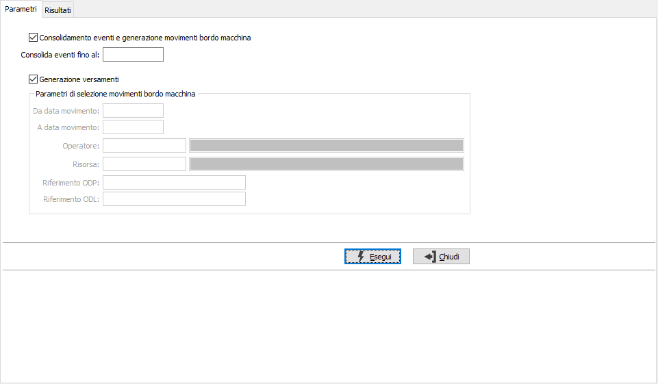
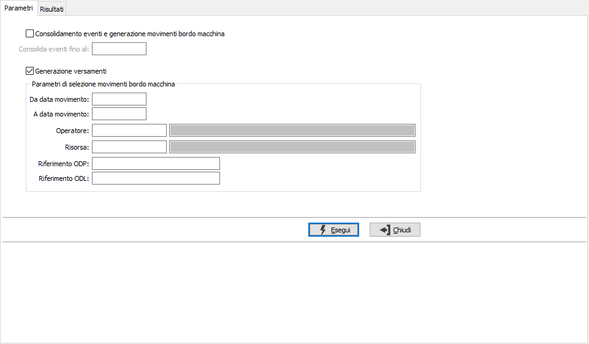
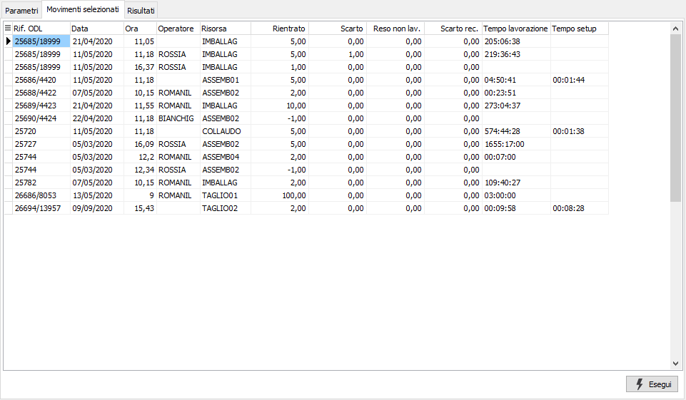
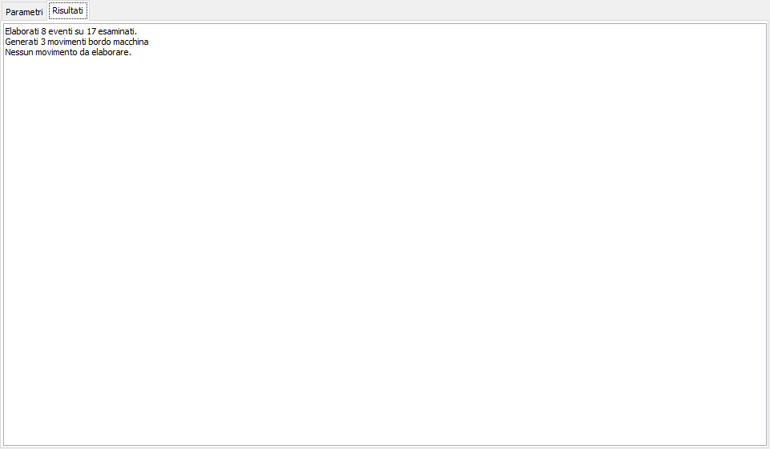

Registrazione versamenti
Come già descritto in Introduzione la generazione dei versamenti derivanti dai movimenti bordo macchina e dei relativi movimenti di magazzino può essere eseguita automaticamente dal sistema (schedulando nelle operazioni pianificate di sistema il richiamo di un apposita applicazione) oppure lanciata manualmente dall’operatore.
Se viene richiesto il consolidamento degli eventi e generazione dei movimenti bordo macchina, spuntando la relativa casella, si attiva la richiesta della data limite al consolidamento degli eventi; se il campo viene compilato,la data inserita sarà confrontata con la data di chiusura dell'evento: saranno selezionati solo gli eventi con data chiusura minore o uguale alla data inserita; se il campo rimane vuoto non sarà effettuato nessun controllo sulle date. Se viene spuntata anche la casella "Generazione versamenti" saranno generati tutti i versamenti derivanti dai movimenti bordo macchina senza possibilità di filtro; è possibile compiere le due operazioni separatamente se si necessita di filtrare i movimenti bordo macchina.

Se viene richiesta la sola esecuzione della generazione dei versamenti, spuntando la relativa casella, si attivano anche dei parametri che consentono di specificare la selezione dei movimenti bordo macchina da elaborare per data, operatore, risorsa, riferimento ODP e ODL, in modo da poter controllare dettagliatamente i versamenti che saranno generati.

Se viene specificato anche un solo parametro, prima di eseguire la generazione dei versamenti viene mostrata la pagina dei movimenti selezionati, che riporta i movimenti bordo macchina che saranno oggetto della generazione dei versamenti in modo da poter fare un ulteriore controllo; premendo Esegui viene effettuata la generazione dei versamenti.

La procedura di registrazione eseguita da menù consente di consolidare gli eventi derivanti dall'applicazione OS1BMJob presente in reparto e di generare, se gli eventi consolidati riportano delle quantità, i relativi movimenti bordo macchina; inoltre consente la generazione simultanea o differita dei versamenti, a seconda che sia attiva o meno la verifica dei movimenti bordo macchina da parte del responsabile di produzione. Al termine dell'elaborazione mostra nel riquadro il risultato della generazione e gli eventuali errori verificatisi.

Per ogni movimento bordo macchina elaborato saranno generati tanti movimenti di versamento quante sono le quantità valorizzate sul movimento: un movimento di versamento per la quantità versata, uno per lo scarto, uno per lo scarto recuperabile, uno per il reso non lavorato ed uno per l'eventuale saldo. E' possibile che vengano anche consolidati eventi che non danno origine a movimenti bordo macchina, perchè privi di quantità o perchè relativi a movimenti già generati; in questo caso sarà comunque possibile associarli al movimento stesso dalla funzione di Gestione operazioni bordo macchina.